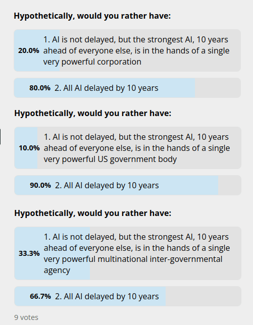
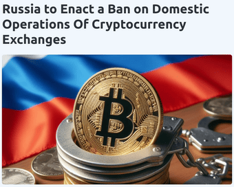
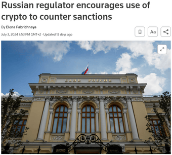

Against choosing your political allegiances based on who is "pro-crypto"
Over the last couple of years, "crypto" has become an increasingly important topic in political policy, with various jurisdictions considering bills that regulate various actors doing blockchain things in various ways. This includes the Markets in Crypto Assets regulation (MiCA) in the EU, efforts to regulate stablecoins in the UK, and the complicated mix of legislation and attempted regulation-by-enforcement from the SEC that we have seen in the United States. Many of these bills are, in my view, mostly reasonable, though there are fears that governments will attempt extreme steps like treating almost all coins as securities or banning self-hosted wallets. In the wake of these fears, there is a growing push within the crypto space to become more politically active, and favor political parties and candidates almost entirely on whether or not they are willing to be lenient and friendly to "crypto".
In this post, I argue against this trend, and in particular I argue that making decisions in this way carries a high risk of going against the values that brought you into the crypto space in the first place.
 _Me with Vladimir Putin in 2018. At the time, many in the Russian government expressed willingness to become "open to crypto"._
"Crypto" is not just cryptocurrency and blockchains
Within the crypto space there is often a tendency to over-focus on the centrality of "money", and the freedom to hold and spend money (or, if you wish, "tokens") as the most important political issue. I agree that there is an important battle to be fought here: in order to do anything significant in the modern world, you need money, and so if you can shut down anyone's access to money, you can arbitrarily shut down your political opposition. The right to spend money privately, a cause that Zooko tirelessly advocates for, is similarly important. The ability to issue tokens can be a significant power-up to people's ability to make digital organizations that actually have collective economic power and do things. But a near-exclusive focus on cryptocurrency and blockchains is more difficult to defend, and importantly it was not the ideology that originally created crypto in the first place.
What originally created crypto was the cypherpunk movement, a much broader techno-libertarian ethos which argued for free and open technology as a way of protecting and enhancing individual freedoms generally. Back in the 2000s, the main theme was fighting off restrictive copyright legislation which was being pushed by corporate lobbying organizations (eg. the RIAA and MPAA) that the internet labelled as the "MAFIAA". A famous legal case that generated a lot of fury was Capitol Records, Inc. v. Thomas-Rasset, where the defendant was forced to pay $222,000 in damages for illegally downloading 24 songs over a file-sharing network. The main weapons in the fight were torrent networks, encryption and internet anonymization. A lesson learned very early on the importance of decentralization. As explained in one of the very few openly political statements made by Satoshi:
[Lengthy exposition of vulnerability of a systm to use-of-force monopolies ellided.]
You will not find a solution to political problems in cryptography.
Yes, but we can win a major battle in the arms race and gain a new territory of freedom for several years.
Governments are good at cutting off the heads of a centrally controlled networks like Napster, but pure P2P networks like Gnutella and Tor seem to be holding their own.
Bitcoin was viewed as an extension of that spirit to the area of internet payments. There was even an early equivalent of "regen culture": Bitcoin was an incredibly easy means of online payment, and so it could be used to organize ways to compensate artists for their work without relying on restrictive copyright laws. I participated in this myself: when I was writing articles for Bitcoin Weekly in 2011, I developed a mechanism where we would publish the first paragraph of two new articles that I wrote, and we would hold the remainder "for ransom", releasing the contents when the total donations to a public address would reach some specified quantity of BTC.
The point of all this is to contextualize the mentality that created blockchains and cryptocurrency in the first place: freedom is important, decentralized networks are good at protecting freedom, and money is an important sphere where such networks can be applied - but it's one important sphere among several. And indeed, there are several further important spheres where decentralized networks are not needed at all: rather, you just need the right application of cryptography and one-to-one communication. The idea that freedom of payment specifically is the one that's central to all other freedoms is something that came later - a cynic might say, it's an ideology retroactively formed to justify "number go up".
I can think of at least a few other technological freedoms that are just as "foundational" as the freedom to do things with crypto tokens:
- Freedom and privacy of communication: this covers encrypted messaging, as well as pseudonymity. Zero-knowledge proofs could protect pseudonymity at the same time as ensuring important claims about authenticity (eg. that a message is sent by a real human), and so supporting use cases of zero-knowledge proofs is also important here.
- Freedom and privacy-friendly digital identity: there are some blockchain applications here, most notably in allowing revocations and various use cases of "proving a negative" in a decentralized way, but realistically hashes, signatures and zero knowledge proofs get used ten times more.
- Freedom and privacy of thought: this one is going to become more and more important in the next few decades, as more and more of our activities become mediated by AI interactions in deeper and deeper ways. Barring significant change, the default path is that more and more of our thoughts are going to be directly intermediated and read by servers held by centralized AI companies.
- High-quality access to information: social technologies that help people form high-quality opinions about important topics in an adversarial environment. I personally am bullish on prediction markets and Community Notes; you may have a different take on the solutions, but the point is that this topic is important.
And the above list is just technology. The goals that motivate people to build and participate in blockchain applications often have implications outside of technology as well: if you care about freedom, you might want the government to respect your freedom to have the kind of family you want. If you care about building more efficient and equitable economies, you might want to look at the implications of that in housing. And so on.
My underlying point is: if you're the type of person who's willing to read this article past the first paragraph, you're not in crypto just because it's crypto, you're in crypto because of deeper underlying goals. Don't stand with crypto-as-in-cryptocurrency, stand with those underlying goals, and the whole set of policy implications that they imply.
Current "pro-crypto" initiatives, at least as of today, do not think in this way:
  _The "key bills" that [StandWithCrypto](https://www.standwithcrypto.org/) tracks. There is no attempt made whatsoever to judge politicians on freedoms related to cryptography and technology that go beyond cryptocurrency._
If a politician is in favor of your freedom to trade coins, but they have said nothing about the topics above, then the underlying thought process that causes them to support the freedom to trade coins is very different from mine (and possibly yours). This in turn implies a high risk that they will likely have different conclusions from you on issues that you will care about in the future.
Crypto and internationalism
 _Ethereum node map, source [ethernodes.org](https://ethernodes.org/countries)_
One social and political cause that has always been dear to me, and to many cypherpunks, is internationalism. Internationalism has always been a key blind spot of statist egalitarian politics: they enact all kinds of restrictive economic policies to try to "protect workers" domestically, but they often pay little or no attention to the fact that two thirds of global inequality is between countries rather than within countries. A popular recent strategy to try to protect domestic workers is tariffs; but even when tariffs succeed at achieving that goal, unfortunately they often do so at the expense of workers in other countries. A key liberatory aspect of the internet is that, in theory, it makes no distinctions between the wealthiest nations and the poorest. Once we get to the point where most people everywhere have a basic standard of internet access, we can have a much more equal-access and globalized digital society. Cryptocurrency extends these ideals to the world of money and economic interaction. This has the potential to significantly contribute to flattening the global economy, and I've personally seen many cases where it already has.
But if I care about "crypto" because it's good for internationalism, then I should also judge politicians by how much they and their policies show a care for the outside world. I will not name specific examples, but it should be clear that many of them fail on this metric.
Sometimes, this even ties back to the "crypto industry". While recently attending EthCC, I received messages from multiple friends who told me that they were not able to come because it has become much more difficult for them to get a Schengen visa. Visa accessibility is a key concern when deciding locations for events like Devcon; the USA also scores poorly on this metric. The crypto industry is uniquely international, and so immigration law is crypto law. Which politicians, and which countries, recognize this?
Crypto-friendly now does not mean crypto-friendly five years from now
If you see a politician being crypto-friendly, one thing you can do is look up their views on crypto itself five years ago. Similarly, look up their views on related topics such as encrypted messaging five years ago. Particularly, try to find a topic where "supporting freedom" is unaligned with "supporting corporations"; the copyright wars of the 2000s are a good example of this. This can be a good guide on what kinds of changes to their views might happen five years in the future.
Divergence between decentralization and acceleration
One way in which a divergence might happen, is if the goals of decentralization and acceleration diverge. Last year, I made a series of polls essentially asking people which of those two they value more in the context of AI. The results decidedly favored the former:

Often, regulation is harmful to both decentralization and acceleration: it makes industries more concentrated and slows them down. A lot of the most harmful crypto regulation ("mandatory KYC on everything") definitely goes in that direction. However, there is always the possibility that those goals will diverge. For AI, this is arguably happening already. A decentralization-focused AI strategy focuses on smaller models running on consumer hardware, avoiding a privacy and centralized-control dystopia where all AI relies on centralized servers that see all our our actions, and whose operators' biases shape the AI's outputs in a way that we cannot escape. An advantage of a smaller-models-focused strategy is that it is more AI-safety-friendly, because smaller models are inherently more bounded in capabilities and more likely to be more like tools and less like independent agents. An acceleration-focused AI strategy, meanwhile, is enthusiastic about everything from the smallest micro-models running on tiny chips to the 7-trillion-dollar clusters of Sam Altman's dreams.
As far as I can tell, within crypto we have not yet seen that large a split along these lines, but it feels very plausible that some day we will. If you see a "pro-crypto" politician today, it's worth it to explore their underlying values, and see which side they will prioritize if a conflict does arise.
What "crypto-friendly" means to authoritarians
There is a particular style of being "crypto-friendly" that is common to authoritarian governments, that is worth being wary of. The best example of this is, predictably, modern Russia.
The recent Russian government policy regarding crypto is pretty simple, and has two prongs:
- When we use crypto, that helps us avoid other people's restrictions, so that's good.
- When you use crypto, that makes it harder for us to restrict or surveil you or put you in jail for 9 years for donating $30 to Ukraine, so that's bad.
Here are examples of Russian government actions of each type:


Another important conclusion of this is that if a politician is pro-crypto today, but they are the type of person that is either very power-seeking themselves, or willing to suck up to someone who is, then this is the direction that their crypto advocacy may look like ten years from now. If they, or the person they are sucking up to, actually do consolidate power, it almost certainly will. Also, note that the strategy of staying close to dangerous actors in order to "help them become better" backfires more often than not.
But I like [politician] because of their entire platform and outlook, not just because they're pro-crypto! So why should I not be enthusiastic about their crypto stance?
The game of politics is much more complicated than just "who wins the next election", and there are a lot of levers that your words and actions affect. In particular, by publicly giving the impression that you support "pro-crypto" candidates just because they are "pro-crypto", you are helping to create an incentive gradient where politicians come to understand that all they need to get your support is to support "crypto". It doesn't matter if they also support banning encrypted messaging, if they are a power-seeking narcissist, or if they push for bills that make it even harder for your Chinese or Indian friend to attend the next crypto conference - all that politicians have to do is make sure it's easy for you to trade coins.
 _"Someone in a prison cell juggling gold coins", locally-running StableDiffusion 3_
Whether you are someone with millions of dollars ready to donate, or someone with millions of Twitter followers ready to influence, or just a regular person, there are far more honorable incentive gradients that you could be helping to craft.
If a politician is pro-crypto, the key question to ask is: are they in it for the right reasons? Do they have a vision of how technology and politics and the economy should go in the 21st century that aligns with yours? Do they have a good positive vision, that goes beyond near-term concerns like "smash the bad other tribe"? If they do, then great: you should support them, and make clear that that's why you are supporting them. If not, then either stay out entirely, or find better forces to align with.